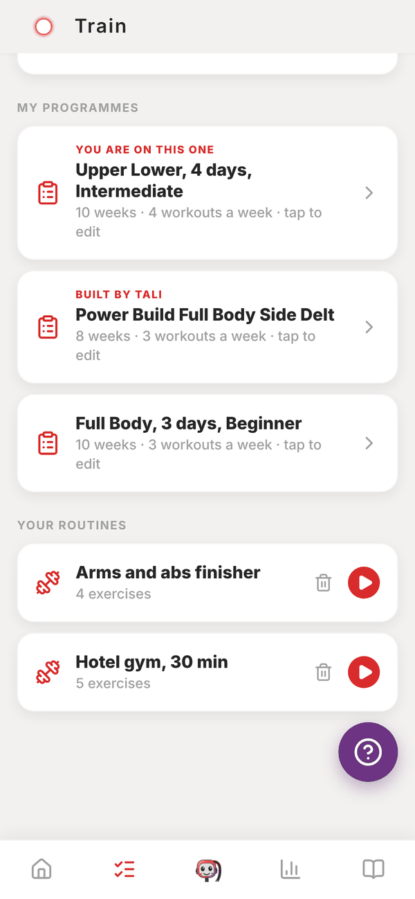
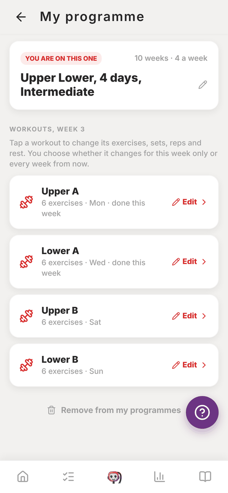
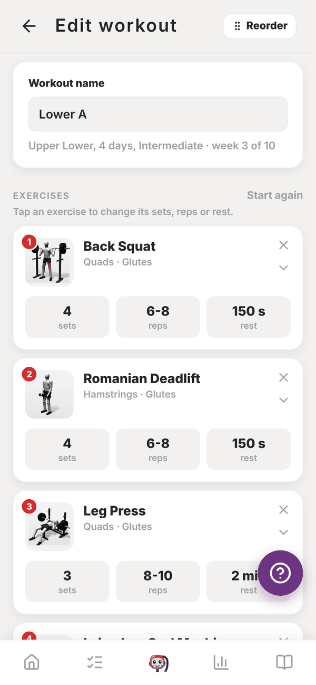

Totality Training guide
My programmes and editing
Every programme you start or have Tali build is saved, and every workout in it is yours to change.
Everything you start, and every programme Tali builds for you, is saved under My programmes on Train.


Open one of your programmes#
Tap a programme under My programmes, or tap Edit this programme under the one you are on. You can:
- Rename it. Tap the name or the pencil.
- Edit a workout. Tap a workout to change it (see below).
- Start it again. Tap Start this programme on one you are not on.
- Remove it. Tap Remove from my programmes. Workouts you already did stay in your history.
Edit a workout#

- Open the programme and tap a workout.
- Change the name, tap an exercise to change its sets, reps or rest, tap the cross to remove it, or add exercises from the library.
- Tap Reorder to move exercises up or down.
- Pair an exercise with the next one to make a superset: do one, then the other, then rest.
- Save it. You choose Save for this week only or Save for every week from now.
Workouts you have already logged are never changed. If you logged this one this week, it stays as it is.
Questions#
Will the lighter last week still be lighter?
Yes. When you save for every week, the lighter week keeps fewer sets.
I removed a programme by mistake.
The workouts you logged are still in your history. To use the programme again, start the same template from Choose from a template.